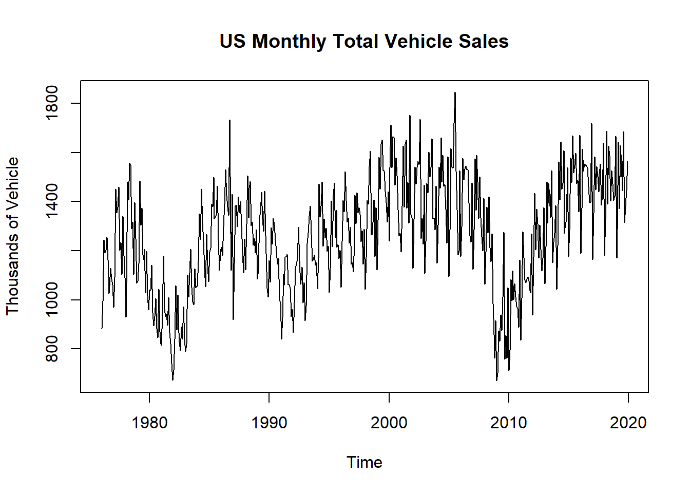
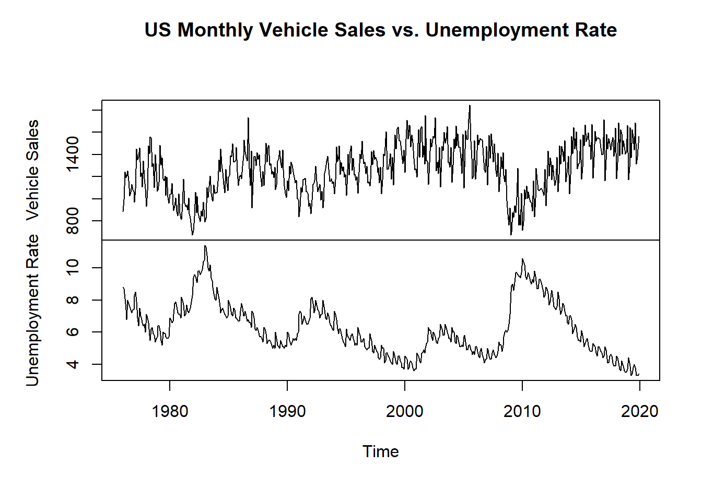

library(TSstudio)
# Test if the object is a "ts" class
is.ts(USgas) [1] TRUE# Get the number of observations
length(USgas) [1] 238R provides several classes for representing time series objects for a variety of applications. Among those classes, ts is one of the main formats for time series data in R, mainly due to its simplicity and the wide adoption of this class by the main packages in R for time series analysis, for example, the forecast and stats packages.
Typically, when loading a new dataset, it is recommended that you plot the series before moving to the next step in the analysis. This allows you to have a quick look at the series to observe whether the data has been appropriately transformed and get a general understanding of the series’ structure.
The ts class is R’s built-in format for a regular univariate time series object.
A regular time series is defined as an ordered sequence of observations over time, which is captured at equally spaced time intervals (that is, every day, week, month, and so on). Whenever this condition ceases to exist, the series becomes an irregular time series. We are specifically going to focus on the analysis and the forecasting of regular time series data.
The main characteristics of regular time series data is as follows:
Cycle/period: A regular and repeating unit of time that split the series into consecutive and equally long subsets (for example, for monthly series, a full cycle would be a year).
Frequency: Defines the length or the number of units of the cycle (for example, for quarterly series, the frequency is four).
Timestamp: Provides the time each observation in the series was captured, and can be used as the series index. By definition, in a regular time series the time difference (or delta) between two consecutive observations must be equal.
A ts object is composed of two elements:
the series values and,
its corresponding timestamp.
In addition, it also has several attributes, such as the series, cycle, frequency, and the time interval between each consecutive observation.
After loading new data into the environment, it is always recommended that you check and verify whether the data structure is aligned with your expectations. A fast and recommended check to start with would be to verify the data class and length, which can be done with the is.ts and length functions:
Example:
library(TSstudio)
# Test if the object is a "ts" class
is.ts(USgas) [1] TRUE# Get the number of observations
length(USgas) [1] 238The structure of the ts object is a bit different from most data structures in R (matrix, data.frame, data.table, tibble, and so on). While the ts object is a two-dimensional dataset (time/index and the series observations), it doesn’t share the common attributes of most of the regular tables in R (such as matrix or data.frame) since the series index is embedded within the object itself. Therefore, some of the common functions for R’s tables won’t work with a ts object (such as the dim function).
A practical and concise method to get the characteristics of the series is with the frequency and deltat functions from the stats package, which provide the series frequency and the time interval between the observations:
Example:
frequency(USgas)[1] 12deltat(USgas)[1] 0.08333333Other useful utility functions are the start and end functions, which, as their names imply, return the series timestamp’s starting and ending point, respectively:
Example:
start(USgas)[1] 2000 1end(USgas)[1] 2019 10The ts_info function from the TSstudio package provides a concise summary of most of the preceding functions, including the object class, the number of observations, the frequency, and the starting and ending of the series.
Example:
ts_info(USgas) The USgas series is a ts object with 1 variable and 238 observations
Frequency: 12
Start time: 2000 1
End time: 2019 10 The ts function from the stats package allows you to create a ts object by assigning sequential observations and mapping their attributes.
Example:
library(TSstudio)
my_ts1 <- ts(data = 1:60, # The series values
start = c(2010, 1), # The time of the first observation
end = c(2014, 12), # The time of the last observation
frequency = 12) # The series frequency
# Review the attributes of the new object
ts_info(my_ts1) The my_ts1 series is a ts object with 1 variable and 60 observations
Frequency: 12
Start time: 2010 1
End time: 2014 12 my_ts1 Jan Feb Mar Apr May Jun Jul Aug Sep Oct Nov Dec
2010 1 2 3 4 5 6 7 8 9 10 11 12
2011 13 14 15 16 17 18 19 20 21 22 23 24
2012 25 26 27 28 29 30 31 32 33 34 35 36
2013 37 38 39 40 41 42 43 44 45 46 47 48
2014 49 50 51 52 53 54 55 56 57 58 59 60Note that when creating a new ts object it is sufficient to define either the start or end arguments, as the end or start value of the series can be derived from the length of the series and its frequency.
It is most likely that your raw data won’t come in ts format and some preprocessing steps may be required before transforming the input to a ts object. Those preprocessing steps may include the following:
Exporting the data from an external source, for example, an Excel or CSV file, SQL database, GitHub, and so on.
Reformatting the timestamp of the series or defining the series index.
Reordering the series according to its chronological order.
Example:
data(US_indicators)
str(US_indicators)'data.frame': 528 obs. of 3 variables:
$ Date : Date, format: "1976-01-31" "1976-02-29" ...
$ Vehicle Sales : num 885 995 1244 1191 1203 ...
$ Unemployment Rate: num 8.8 8.7 8.1 7.4 6.8 8 7.8 7.6 7.4 7.2 ...Extract the data. We are going to convert the vehicle sales series into a ts object, so we will extract the first two columns of the series and assign them to a new data frame named tvs, which denotes the total vehicle sales:
tvs <- US_indicators[, 1:2]
str(tvs)'data.frame': 528 obs. of 2 variables:
$ Date : Date, format: "1976-01-31" "1976-02-29" ...
$ Vehicle Sales: num 885 995 1244 1191 1203 ...Arrange the data. Before converting the data frame, or generally any other R table format (such as tibble and data.table) to a ts object, you will need to arrange the data in chronological order.
library(dplyr)
tvs <- tvs |>
arrange(Date)
head(tvs) Date Vehicle Sales
1 1976-01-31 885.2
2 1976-02-29 994.7
3 1976-03-31 1243.6
4 1976-04-30 1191.2
5 1976-05-31 1203.2
6 1976-06-30 1254.7Set the start (or end) of the series. Since the input series is monthly, we need to define the cycle (year) and frequency (month) units of the first observation of the series. This can be done manually, by observing the first date of the series and set the start point accordingly. In this case, the series started in January 1976, and therefore we can define it as start = c(1976, 1), or we can write a code to capture the starting point of the series.
library(lubridate)
start_point <- c(year(min(tvs$Date)),
month(min(tvs$Date)))
start_point[1] 1976 1Define the series with the ts function. Utilize the start_point variable to define the beginning of the series:
tvs_ts <- ts(data = tvs$`Vehicle Sales`,
start = start_point,
frequency = 12)
head(tvs_ts)[1] 885.2 994.7 1243.6 1191.2 1203.2 1254.7In some instances, such as correlation analysis, you may need to work with multivariate time series objects. In this case you can use the mts (multiple time series) class, an extension of the ts class.
The mts class is a combination of the ts and matrix classes, and its advantage is that it shares the attributes of both those classes.
Example:
data(Coffee_Prices)
ts_info(Coffee_Prices) The Coffee_Prices series is a mts object with 2 variables and 701 observations
Frequency: 12
Start time: 1960 1
End time: 2018 5 class(Coffee_Prices)[1] "mts" "ts" "matrix"head(Coffee_Prices) Robusta Arabica
[1,] 0.6968643 0.9409
[2,] 0.6887074 0.9469
[3,] 0.6887074 0.9281
[4,] 0.6845187 0.9303
[5,] 0.6906915 0.9200
[6,] 0.6968643 0.9123You can utilize and apply any designated function for a matrix object (when applicable) on an mts object. Similarly, the mts object also supports the ts objects functions, such as the frequency, time, start, or end functions.
Note that two or more series can be merged to an mts object only if all the following prerequisites are met:
All inputs are regular time series.
All inputs have exactly the same frequency or time interval between the observations.
All inputs start at the same cycle number and cycle unit (unless missing values are filled with NAs).
The process of converting a mts series object from a data frame to ts format is fairly similar to that of the ts object.
In the following example we are going to use the US_indicators series:
Example:
data("US_indicators")Order the series by chronological order. Make sure that the series is sorted in chronological order with the arrange function:
US_indicators <- US_indicators |>
arrange(Date)Create the ts object. Use the ts function to create the ts objects, where the input data includes two columns (as opposed to a single one for the ts object):
US_indicators_ts <- ts(data = US_indicators[, c("Vehicle Sales", "Unemployment Rate")],
start = c(year(min(tvs$Date)), month(min(tvs$Date))),
frequency = 12)Review the transformed object. Use the ts_info and head functions:
ts_info(US_indicators_ts) The US_indicators_ts series is a mts object with 2 variables and 528 observations
Frequency: 12
Start time: 1976 1
End time: 2019 12 head(US_indicators_ts) Vehicle Sales Unemployment Rate
[1,] 885.2 8.8
[2,] 994.7 8.7
[3,] 1243.6 8.1
[4,] 1191.2 7.4
[5,] 1203.2 6.8
[6,] 1254.7 8.0Note that setting the frequency impacts the structure of the ts object output.
As an example we will use the seq.Date method to create a sequence of 3,650 days (or 365 times 10, which is 10 years excluding the extra day during leap years) starting on January 1, 2010. We will then use the rnorm function to generate the corresponding values of the series following a normal distribution with a mean of 15 and a standard deviation (sd) of 2:
daily_df <- data.frame(date = seq.Date(from = as.Date("2010-01-01"),
length.out = 365 * 10,
by = "day"),
y = rnorm(365 * 10, mean = 15, sd = 2))
str(daily_df)'data.frame': 3650 obs. of 2 variables:
$ date: Date, format: "2010-01-01" "2010-01-02" ...
$ y : num 17.4 11.8 12.7 13.8 18.1 ...We will assign the first date of the series to a variable (start_date) and use it to set the start point of the series:
start_date <- min(daily_df$date)For a daily series with weekly cycles, the frequency of the series should be set to seven (for example, Monday to Sunday) as can be seen in the following example:
days_week_ts <- ts(daily_df$y,
start = c(1, wday(start_date)),
frequency = 7)
ts_info(days_week_ts) The days_week_ts series is a ts object with 1 variable and 3650 observations
Frequency: 7
Start time: 1 6
End time: 523 1 Once the series is transformed into a ts object, it might still be necessary to continue applying some additional transformation or preprocessing steps. These can include steps such as extracting or subsetting a specific element of the series or aggregating the series to a different frequency (for example, from monthly to quarterly).
Note that due to the unique structure of the ts object, in most cases, the common extraction methods for data.frame do not apply to ts objects.
The main purpose of the window function is to subset a ts object based on a time range.
Example:
# Extract all the observations of the year 2005
window(USgas, start = c(2005,1), end = c(2005, 12)) Jan Feb Mar Apr May Jun Jul Aug Sep Oct
2005 2561.9 2243.0 2205.8 1724.9 1522.6 1534.1 1686.6 1695.1 1422.5 1428.2
Nov Dec
2005 1663.4 2326.4Similarly, we can extract a specific frequency unit from the series. For example, let’s assume that we are interested in extracting all the observations of the series that occurred in the third quarter of the year.
Example:
# Extract observations from the quarters of the year 2005
window(USgas, start = c(2005,1), end = c(2005, 12), frequency = 3)Time Series:
Start = c(2005, 1)
End = c(2005, 3)
Frequency = 3
[1] 2561.9 1522.6 1422.5The aggregate function is a generic function for aggregating ts and data.frame objects. This splits the data into subsets, computes specific summary statistics (based on the user’s choice), and then aggregates the results to a ts or data.frame object (depending on the input type).
Example:
# Transform the USVSales series from a monthly frequency to quarterly
USVSales_q <- aggregate(USVSales, nfrequency = 3, FUN = "sum")
ts_info(USVSales_q) The USVSales_q series is a ts object with 1 variable and 132 observations
Frequency: 3
Start time: 1976 1
End time: 2019 3 Handling missing values, if these exist, can be done by using the na.action argument of the aggregate function, which, by default, ignores missing values.
The use of lags in time series analysis is widespread because, typically, a time series is correlated with some of its previous lags.
We can generally distinguish between two types of lags:
Past lags, or simply lags, represent a shift in the series by \(n\) steps back, with respect to the original series. For a series with \(t\) observations, the \(n\) lag of the series begins at time \(n+1\) and ends at time \(t+n\) (where the first \(n\) observations are missing).
Example:
# k Sets the number of lags (or leads) to be created
USVSales_lag4 <- stats::lag(USVSales, k = -4) Lead (or negative lags) represent a shift in the series by \(n\) steps forward, with respect to the original series. In this case, for a series with \(t\) observations, the lead \(n\) of the series begins at the time \(n\) and end at time \(t-n\) (where the last \(n\) observations are missing).
USVSales_lead1 <- stats::lag(USVSales, k = 1)There are two approaches for visualizing a time series object:
Direct: This approach uses a visualization function to plot the object without any data transformation or conversion to another class. There are few packages that provide direct tools for visualizing time series objects:
stats: In addition to the ts objects, this provides the plot.ts function for visualizing time series objects. This function is an extension of the plot function, which is an R built-in visualization function.
dygraphs: This R package is an interface for the dygraphs JavaScript visualization library. It provides an interactive application for visualizing ts objects.
TSstudio: This is a designated package for descriptive and predictive analysis of time series data. This includes rich and interactive visualization applications for time series objects, such as ts, mts, zoo, xts, and other table-based formats (such as data.frame and tibble). Like the previous package, the TSstudio package uses the plotly package engine.
In-direct: This approach involves applying some data transformation steps to restructure the data as a numeric two-dimensional structure (values over time). This includes the use of packages such as ggplot2, plotly, highcharter, and rbokeh.
The main difference between the direct and indirect approaches is that the former was designed to work with the ts objects and it therefore automatically transfers the value of the series and timestamp onto a y-axis and x-axis respectively. On the other hand, in the indirect approach, you will have to define those two dimensions (values vs. time) manually.
The plot.ts function from the stats package is built-in R function for visualizing of a ts object. Therefore, most of the arguments of the plot function (such as title and labeling options) can be used with the plot.ts function.
Example:
plot.ts(tvs_ts,
main = "US Monthly Total Vehicle Sales",
ylab = "Thousands of Vehicle",
xlab = "Time")
Similarly, we can use the function to plot an mts object:
Example:
plot.ts(US_indicators_ts,
plot.type = "multiple",
main = "US Monthly Vehicle Sales vs. Unemployment Rate",
xlab = "Time")
The dygraphs package is an R interface to the dygraphs JavaScript charting library, and it is completely dedicated to visualizing time series objects, including the ts class. It is highly customized, interactive, and supports HTML implementation (for example, the rmarkdown and Shiny packages).
Exxample:
library(dygraphs)
dygraph(tvs_ts,
main = "US Monthly Total Vehicle Sales",
ylab = "Thousands of Vehicle") %>%
dyRangeSelector()For multiple objects, we will use the US_indicators_ts series, adding a second y-axis, which allows us to plot and compare the two series that are not on the same scale (for example, thousands of units versus percentage):
Example:
dygraph(US_indicators_ts,
main = "US Monthly Vehicle Sales vs. Unemployment Rate") %>%
dyAxis("y", label = "Vehicle Sales") %>%
dyAxis("y2", label = "Unemployment Rate") %>%
dySeries("Vehicle Sales", axis = 'y', color = "green") %>%
dySeries("Unemployment Rate", axis = 'y2', color = "red") %>%
dyLegend(width = 400)Looking at the plot of the US_indicator_ts series when using two y-axes, you can see that it is easier to identify the relationship between the two series as opposed to plotting them on a separate plot (as we did with the plot.ts function earlier).
The dygraph uses an object-oriented approach, which allows you to add a different component to the plot with the pipe operator (%>%). This allows the user to add additional arguments for the plot, as opposed to a large amount of arguments in one function.
The TSstudio package provides the ts_plot function for visualizing time series objects using the plotly package visualization engine. In addition, this function supports both time series objects, such as ts, mts, zoo, and xts, and also data frame types such as data.frame, data.table, and tibble.
Example:
library(TSstudio)
ts_plot(tvs_ts,
title = "US Monthly Total Vehicle Sales",
Ytitle = "Thousands of Vehicle",
slider = TRUE # Add an interactive slider for the x-axis
)Similarly, the ts_plot function supports mts objects:
Example:
ts_plot(US_indicators_ts,
title = "US Monthly Vehicle Sales vs. Unemployment Rate",
type = "multiple")Plotting the data may suggest that it is sensible to consider transforming them, for example, by taking logarithms or square roots. The three main reasons for making a transformation are as follows:
To stabilize the variance. If there is a trend in the series and the variance appears to increase with the mean, then it may be advisable to transform the data. In particular, if the standard deviation is directly proportional to the mean, a logarithmic transformation is indicated. On the other hand, if the variance changes through time without a trend being present, then a transformation will not help. Instead, a model that allows for changing variance should be considered.
To make the seasonal effect additive. If there is a trend in the series and the size of the seasonal effect appears to increase with the mean, then it may be advisable to transform the data so as to make the seasonal effect constant from year to year. The seasonal effect is then said to be additive. In particular, if the size of the seasonal effect is directly proportional to the mean, then the seasonal effect is said to be multiplicative and a logarithmic transformation is appropriate to make the effect additive.
To make the data normally distributed. Model building and forecasting are usually carried out on the assumption that the data are normally distributed. In practice this is not necessarily the case. This effect can be difficult to eliminate with a transformation and it may be necessary to model the data using a different ‘error’ distribution.